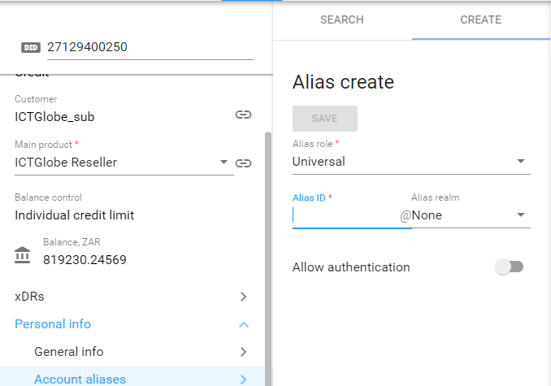

Adding an Alias to an existing SIP
In order to add an alias to an account, the following steps will be required:
NOTE: It is recommended to open two Porta tabs for this action
- First tab: Go the number inventory, search for the number required, new or ported, to make sure it is available. There should be no description, no 'pricing batch', and it should state 'not in use'.
- You can 'copy' the chosen number as it will be added as an alias next.
- Second tab: search for the SIP where the customer is located, and were the alias will be added to.
- Once the SIP profile is open, under Personal info select Account aliases. If there are aliases already linked to this account, it will be shown on the right.
- Next from the SIP account, select Create.
- Now paste the number, and select save (remember to disable the 'Allow authentication' at the bottom):
- To ensure the number is added as an Alias, you can select search, and the number should be added to the Alias list
NOTE: The 'Alias Role' should be selected, it will mostly be 'Universal' and 'Allow authentication', should be disabled. The role can also be seen from the main SIP, or existing Aliases.
